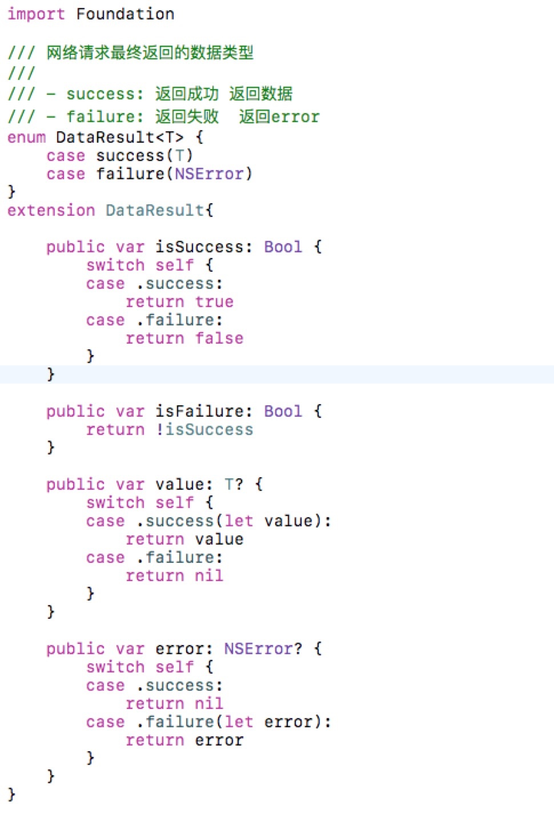
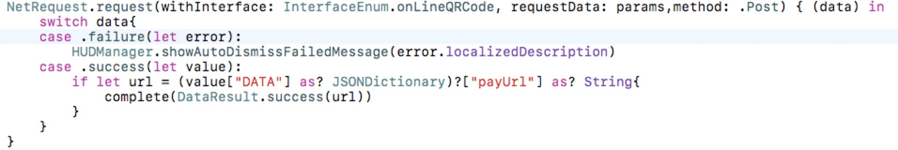

Swift的一种常用类型

这是我在公司项目用到的一种用于网络请求返回数据的类型,我第一次见到它是Alamofire的源码中,他对网络请求的数据就进行了一种这样的封装,当时就觉得不错,不过并没有在意,后来又在喵神翻译的swift进阶中又看了,于是就抱着试一试的态度用一下,果然效果还是不错的.
我个人认为这是一个加强版的可选类型,其实可选类型就是一个枚举值,有value和nil两个枚举值,这个DataResult也是一个枚举值,有error和value两种枚举值,区别是可选类型对返回时nil的情况并不在意,更在意的是结果,只要告诉我有或者没有就可以了,而DataResult类型比可选类型更重视返回错误时的情况,所以我觉得这很适合用在网络请求的返回值中,有数据的时候就是成功,没有数据的时候就是失败,失败的时候返回error类型给业务层做相应的处理.

这是业务层的使用情况,data就是DataResult类型,也可以使用if else 还做处理,这就是extension中isSuccess和isFailure的作用.